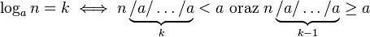
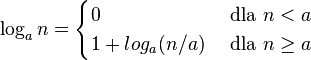

Logarytm
W poprzedniej części zapoznaliśmy się z definicją logarytmu, a nawet zaimplementowaliśmy
funkcję, która ją oblicza. W tej części poznamy nieco inną definicję logarytmu.
Funkcję logarytm zdefiniujemy w taki sposób:
logan = k, gdzie k to najmniejsza liczba,
taka że liczba n podzielona k-krotnie
przez liczbę a jest mniejsza od liczby a. Inaczej mówiąc:

W powyższej definicji występuje dzielenie rzeczywiste, jednak powyższa definicja jest
poprawna także dla dzielenia całkowitego. Tak samo, jak w przypadku definicji z pierwszej
części, przyjmuje się, że logarytm z liczby n, która jest mniejsza niż a,
wynosi zero (logan = 0, dla n<a).
Powyższa definicja jest tożsama z definicją z pierwszej części lekcji,
tzn dla tych samych argumentów funkcje zwracają te same wyniki.
Podobnie jak w pierwszej części funkcję logarytm można obliczyć wykonując pętlę.
Główną różnicą jest to, iż teraz pętla będzie dzielić zmienną n przez liczbę a,
aż zmienna n osiągnie wartość mniejszą niż liczba a.
Jednak definicja z tej części lekcji może być także rozpisana w postaci rekurencyjnej:

Twoim zadaniem jest zaimplementowanie funkcji „int logarytm(a, n)”
zgodnej z definicją logarytmu z pierwszego akapitu. Funkcja powinna zostać napisana
w dwóch wersjach: rekurencyjnej i iteracyjnej.
W przypadku pojawienia się problemów z implementacją tej funkcji, możesz wyświetlić
wskazówkę w postaci pseudokodu. Po zakończeniu implementowania tej funkcji powinienś
porównać swoje roziązania z rozwiązaniami wzorcowymi, a następnie przeczytać podsumowanie.